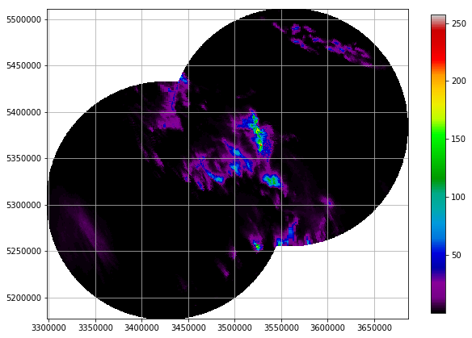

Recipe #1: Clutter and attenuation correction plus composition for two DWD radars¶
This recipe shows a workflow to process radar data provided by the German Weather Service (DWD). The processing includes:
- (1) Reading local DX-Data for radars Feldberg and Tuerkheim.
- (2) Clutter correction using the Gabella filter algorithm.
- (3) Attenuation correction using the Kraemer algorithm.
- (4) Conversion from reflectivity to rainfall using the Z-R Conversions module.
- (5) Accumulation of rainfall depths over the entire event.
- (6) Composition of data from both radars to a common Cartesian grid (Gauss Krueger Zone 3). Composition is based on a weighted combination, using the sampling volume as a quality criterion
- (7) Plotting a rainfall map using cartesian_plot
In [3]:
import glob
import os
def process_polar_level_data(radarname):
"""Reading and processing polar level data (DX) for radar <radarname>
"""
print("Polar level processing for radar %s..." % radarname)
# preparations for loading sample data in source directory
files = glob.glob(os.path.join(wrl.util.get_wradlib_data_path(),
'dx/recipe1_data/raa*%s*bin' % radarname))
if len(files) == 0:
print("WARNING: No data files found - maybe you did not extract "
"the data from data/recipe1_data.zip?")
data = np.empty((len(files), 360, 128))
# loading the data (two hours of 5-minute images)
for i, f in enumerate(files):
#print(i, f)
data[i], attrs = wrl.io.readDX(f)
# Clutter filter on an event base
clmap = wrl.clutter.filter_gabella(data.mean(axis=0), tr1=12, n_p=6,
tr2=1.1)
for i, scan in enumerate(data):
data[i] = wrl.ipol.interpolate_polar(scan, clmap)
# correcting for attenuation
k = wrl.atten.correctAttenuationHJ(data)
data = data + k
# converting to precipitation depth
R = wrl.zr.z2r(wrl.trafo.idecibel(data), a=256, b=1.4)
depth = wrl.trafo.r2depth(R, 300.)
# calculate hourly accumulation
accum = depth.sum(axis=0)
return accum
In [4]:
def bbox(*args):
"""Get bounding box from a set of radar bin coordinates
"""
x = np.array([])
y = np.array([])
for arg in args:
x = np.append(x, arg[:, 0])
y = np.append(y, arg[:, 1])
xmin = x.min()
xmax = x.max()
ymin = y.min()
ymax = y.max()
return xmin, xmax, ymin, ymax
In [5]:
import zipfile
import shutil
import datetime as dt
# set timer
start = dt.datetime.now()
# unzip data
filename = wrl.util.get_wradlib_data_file('dx/recipe1_data.zip')
targetdir = wrl.util.get_wradlib_data_path() + '/dx/recipe1_data'
with zipfile.ZipFile(filename, 'r') as z:
z.extractall(targetdir)
# set scan geometry and radar coordinates
r = np.arange(500., 128500., 1000.)
az = np.arange(0, 360)
tur_sitecoords = (9.7839, 48.5861)
fbg_sitecoords = (8.005, 47.8744)
# processing polar level radar data
# Tuerkheim
tur_accum = process_polar_level_data("tur")
# Feldberg
fbg_accum = process_polar_level_data("fbg")
# remove unzipped files
if os.path.exists(targetdir):
try:
shutil.rmtree(targetdir)
except Exception:
print("WARNING: Could not remove directory data/recipe1_data")
# derive Gauss-Krueger Zone 3 coordinates of range-bin centroids
# for Tuerkheim radar
# create osr projection using epsg number for GK Zone 3
proj_gk3 = wrl.georef.epsg_to_osr(31467)
tur_cent_lon, tur_cent_lat = wrl.georef.polar2centroids(r, az,
tur_sitecoords)
tur_x, tur_y = wrl.georef.reproject(tur_cent_lon, tur_cent_lat,
projection_target=proj_gk3)
tur_coord = np.array([tur_x.ravel(), tur_y.ravel()]).transpose()
# for Feldberg radar
fbg_cent_lon, fbg_cent_lat = wrl.georef.polar2centroids(r, az,
fbg_sitecoords)
fbg_x, fbg_y = wrl.georef.reproject(fbg_cent_lon, fbg_cent_lat,
projection_target=proj_gk3)
fbg_coord = np.array([fbg_x.ravel(), fbg_y.ravel()]).transpose()
# define target grid for composition
xmin, xmax, ymin, ymax = bbox(tur_coord, fbg_coord)
x = np.linspace(xmin, xmax + 1000., 1000.)
y = np.linspace(ymin, ymax + 1000., 1000.)
grid_coords = wrl.util.gridaspoints(y, x)
# derive quality information - in this case, the pulse volume
pulse_volumes = np.tile(wrl.qual.pulse_volume(r, 1000., 1.), 360)
# interpolate polar radar-data and quality data to the grid
print("Gridding Tuerkheim data...")
tur_quality_gridded = wrl.comp.togrid(tur_coord, grid_coords,
r.max() + 500.,
tur_coord.mean(axis=0),
pulse_volumes,
wrl.ipol.Nearest)
tur_gridded = wrl.comp.togrid(tur_coord, grid_coords, r.max() + 500.,
tur_coord.mean(axis=0),
tur_accum.ravel(),
wrl.ipol.Nearest)
print("Gridding Feldberg data...")
fbg_quality_gridded = wrl.comp.togrid(fbg_coord, grid_coords,
r.max() + 500.,
fbg_coord.mean(axis=0),
pulse_volumes,
wrl.ipol.Nearest)
fbg_gridded = wrl.comp.togrid(fbg_coord, grid_coords, r.max() + 500.,
fbg_coord.mean(axis=0),
fbg_accum.ravel(),
wrl.ipol.Nearest)
# compose the both radar-data based on the quality information
# calculated above
print("Composing Tuerkheim and Feldbarg data on a common grid...")
composite = wrl.comp.compose_weighted([tur_gridded, fbg_gridded],
[1. / (tur_quality_gridded + 0.001),
1. / (fbg_quality_gridded + 0.001)])
composite = np.ma.masked_invalid(composite)
print("Processing took:", dt.datetime.now() - start)
Polar level processing for radar tur...
Polar level processing for radar fbg...
Gridding Tuerkheim data...
Gridding Feldberg data...
Composing Tuerkheim and Feldbarg data on a common grid...
('Processing took:', datetime.timedelta(0, 9, 471063))
In [6]:
# Plotting rainfall map
pl.figure(figsize=(10,8))
pl.subplot(111, aspect="equal")
pm = pl.pcolormesh(x, y, composite.reshape((len(x), len(y))),
cmap="spectral")
pl.grid()
pl.xlim(min(x), max(x))
pl.ylim(min(y), max(y))
pl.colorbar(pm, shrink=0.85)
Out[6]:
<matplotlib.colorbar.Colorbar at 0x7f4036a11dd0>

Download required data at the wradlib-data repository.
Note
In order to run the recipe code, you need to extract the sample data
into a directory pointed to by environment variable WRADLIB_DATA.